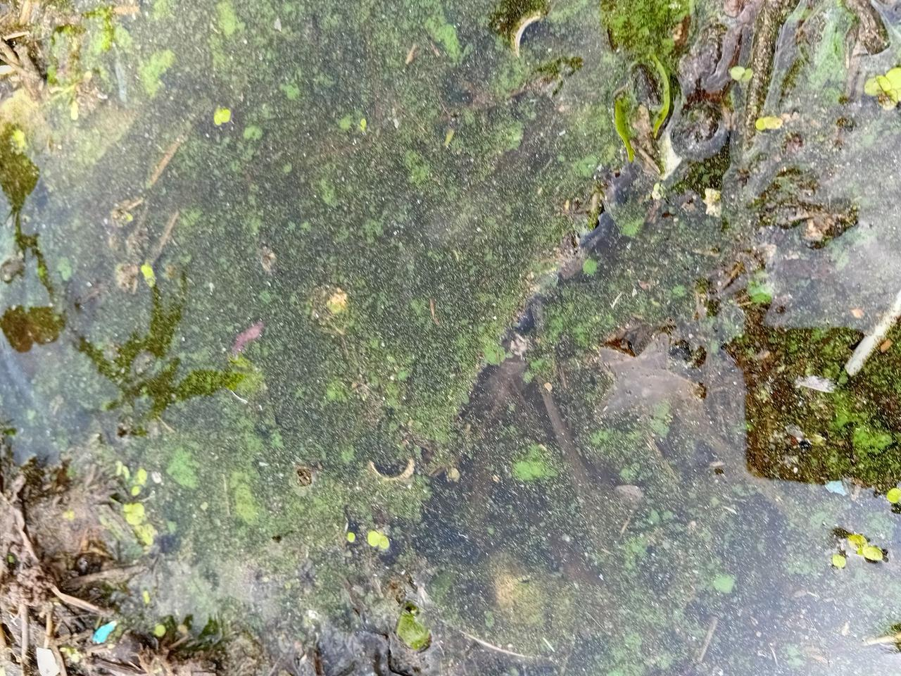
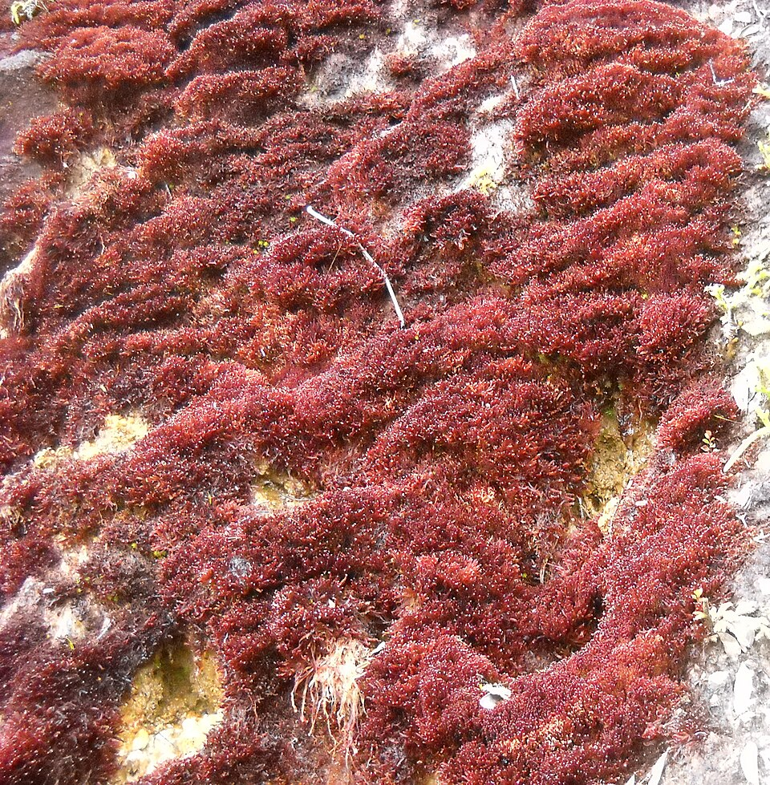

LES ALGUES : LES PREMIERS VEGETAUX DANS L'EAU
Les algues (Chlorophytes). Ancêtres aquatiques dépourvus de racines, de tiges et de feuilles véritables, elles réalisent la photosynthèse directement dans l'eau




Appareil végétatif : Un simple thalle, sans vrai racines, tiges ni feuilles, l'eau soutien et nourri l'algue
Reproduction : spores et gamètes libérés dans l'eau, souvent avec alternance de génération. Les algues vertes sont les ancêtres des plantes terrestres.